Die Touren der Sektion werden von ehrenamtlichen Mitgliedern vorbereitet und geleitet, ausgebildet in den Kursen des SAC: 73 aktive Tourenleitende, alle mit ihren eigenen Disziplinen. 2026 sind 11 neu dazugekommen, rot markiert.
Deborah AciernoKletternTourenleitung seit 2024
VA
Valerio AriuSommerTourenleitung seit 2021
Thomas ArnSommer · WinterTourenleitung seit 2017
Walter BaumgartnerSenioren · Winter · WandernTourenleitung seit 2023
FB
Franco BertoniSommer · Senioren · WinterTourenleitung seit 2018
EB
Enrica Bianchi NeuSommer · Winter · KletternTourenleitung seit 2026
PC
Pier Carlo BocchiSenioren · WandernTourenleitung seit 2025
EB
Elisa BossiKletternTourenleitung seit 2025
MB
Marco BuckWinterTourenleitung seit 2017
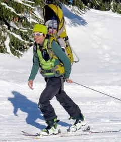
Nadir CaduffSommer · WinterTourenleitung seit 2017
MC
Milvia CarelliSenioren · WandernTourenleitung seit 2023
LC
Loris CarpinetiKletternTourenleitung seit 2018
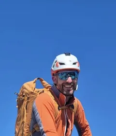
Joel Casada NeuSommerTourenleitung seit 2026
Fausto CattaliniSenioren · WandernTourenleitung seit 2020
SC
Sofia Cereghetti NeuKletternTourenleitung seit 2026
Giosiana CodoniSommer · WinterTourenleitung seit 2017
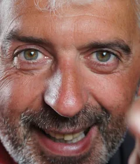
Marco CortiSommer · WinterTourenleitung seit 2017
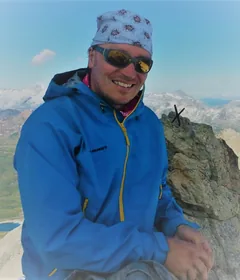
Pierre CrivelliSommer · Bergrettung · Winter · Wandern · KletternTourenleitung seit 2018
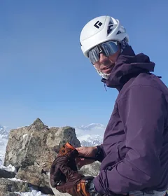
Alessandro DocimoSommer · WinterTourenleitung seit 2023
AD
Alessandro DoninelliSommer · Senioren · Winter · KletternTourenleitung seit 2017
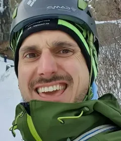
Luigi DossoSommer · KletternTourenleitung seit 2024
CE
Caterina EisenhutSenioren · WandernTourenleitung seit 2019
DE
Daniele EisenhutSeniorenTourenleitung seit 2025
Michele FolettiSommer · KletternTourenleitung seit 2023
Mi sono avvicinato alla montagna verso i 30 anni, frequentando il corso di alpinismo del CAS Ticino. Da allora mi sono formato come monitore G+S di alpinismo e arrampicata. Sono inoltre membro del dicastero sport di montagna e gestisco il magazzino.
Sara Della FreraSommerTourenleitung seit 2020
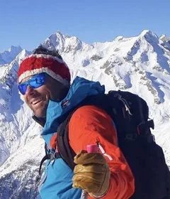
Giovanni GalliSommer · WinterTourenleitung seit 2017
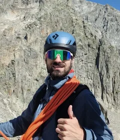
Niccolò GallianiSommerTourenleitung seit 2025
Fabrizio Gastori NeuSenioren · WandernTourenleitung seit 2026
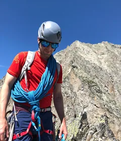
Andrea GhidottiSommer · KletternTourenleitung seit 2018
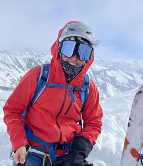
Sarah HolzerWinterTourenleitung seit 2025
FI
Filippo IocchiSommerTourenleitung seit 2024
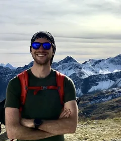
Michel JaegerSommerTourenleitung seit 2020
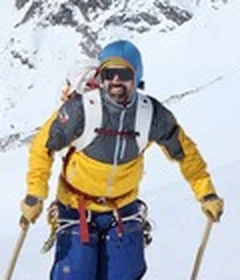
Geoffroy JollyBergrettung · WinterTourenleitung seit 2024
JK
James Kennedy NeuBergrettung · WinterTourenleitung seit 2026
Kilian KnupferSommer · WinterTourenleitung seit 2025
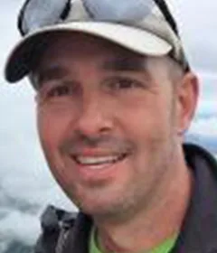
Richard KnupferWinterTourenleitung seit 2020
SK
Stephan Kotyczka NeuWinterTourenleitung seit 2026
AL
Anna LazzarinettiSommerTourenleitung seit 2025
CL
Christian LorenzettiSommer · WinterTourenleitung seit 2018
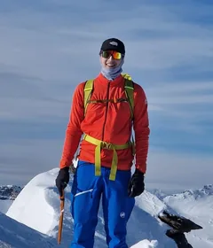
Alfio Maestretti NeuSommerTourenleitung seit 2026
AM
Alessia MangiaKletternTourenleitung seit 2024
Michael MargagliottiSommerTourenleitung seit 2025
Nicola MartinoniSommer · Winter · KletternTourenleitung seit 2017
HM
Hamos MeneghelliWinterTourenleitung seit 2017
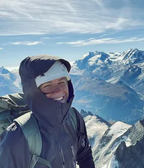
Marta PedriniWinterTourenleitung seit 2023
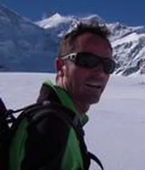
Manuel PellandaSommerTourenleitung seit 2017
Claudio PetriniWinter · KletternTourenleitung seit 2019
FP
Francesco Piattini NeuSommer · WinterTourenleitung seit 2026
RP
Rico Piazzalunga NeuSommer · WinterTourenleitung seit 2026
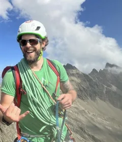
Alessandro PiazzoliSommerTourenleitung seit 2022
GP
Gabriele PonzioSommer · KletternTourenleitung seit 2020
JP
Jessica Poretti NeuWinterTourenleitung seit 2026
NP
Nicolò PorettiKletternTourenleitung seit 2023
NR
Nicola RampaSommer · WinterTourenleitung seit 2021
CR
Cinzia RezzonicoWinterTourenleitung seit 2022
PR
Patrik Rivaroli NeuSommer · WinterTourenleitung seit 2026
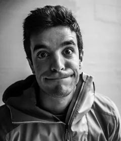
Alessandro RomelliWinterTourenleitung seit 2018
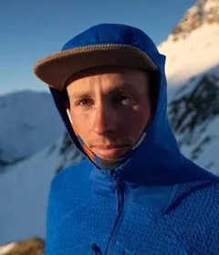
Filippo SalaSommerTourenleitung seit 2024
Luca SalzbornSenioren · Winter · WandernTourenleitung seit 2018
SS
Simona SalzbornSeniorenTourenleitung seit 2018
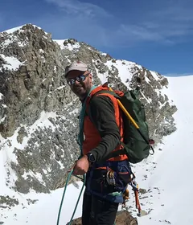
Andrea StellaSommer · WinterTourenleitung seit 2017
MS
Monica StoppaniSenioren · WandernTourenleitung seit 2025
David StracquadanioSommer · WinterTourenleitung seit 2017
AV
Alessandro ValentiSommerTourenleitung seit 2025
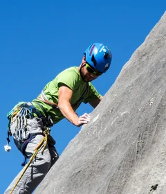
Alessio ValsangiacomoSommerTourenleitung seit 2018
SV
Sandra Valsangiacomo-ZaniniWinterTourenleitung seit 2025
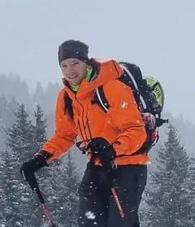
Alessandro VanoniWinterTourenleitung seit 2025
HV
Hanni VanossiSeniorenTourenleitung seit 2019
PG
Piergiorgio Gin VassalliSenioren · WandernTourenleitung seit 2017
IV
Ivan VicenziSenioren · WandernTourenleitung seit 2023
SW
Saskia WillemseSommer · WinterTourenleitung seit 2017
MW
Martin WägliSeniorenTourenleitung seit 2022
Enrico ZamboniSommer · WinterTourenleitung seit 2020
Für Tourenleitende. Die Touren werden im Droptour-Portal veröffentlicht; das Merkblatt fasst Aufgaben und Abläufe der Tourenleitung zusammen.